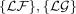
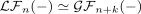
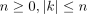
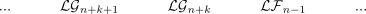
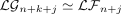
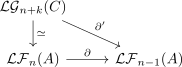

natural isomorphism for a shift of coeffacable left derived functors
1. Proposition
Let  be abelian categories,
be abelian categories,  right exact functors and
right exact functors and

the left derived functors. Suppose there exists a natural isomorphism
for

, such that $n+k, n+k+1,…$ are coeffacableThen it follows that

is a left derived functor of  and hence each
and hence each

by the uniqueness of the characterization by a universal property.2. Proof
2.1. delta functor
2.1.1. exact
follows from the natural iso
2.1.2. natural in exact sequences
follows from naturality
2.1.3. boundary map
For

this follows from the composition

2.2. universal
corollary of